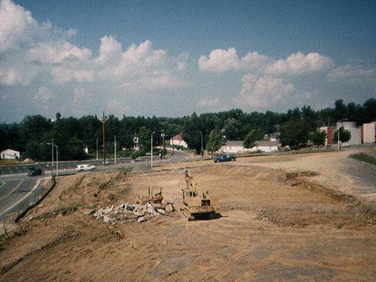
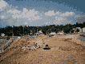
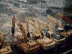
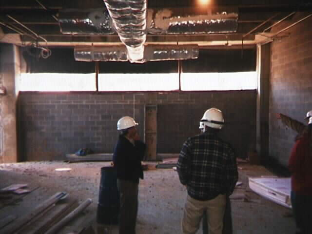
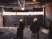
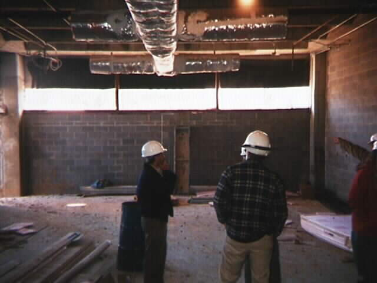
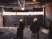
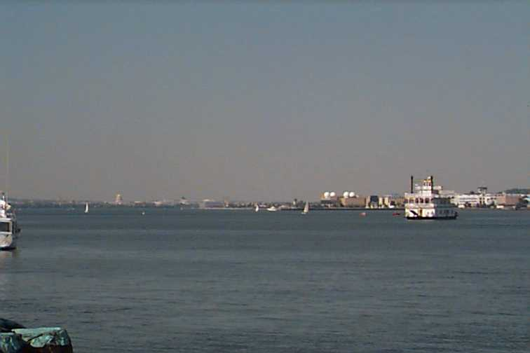
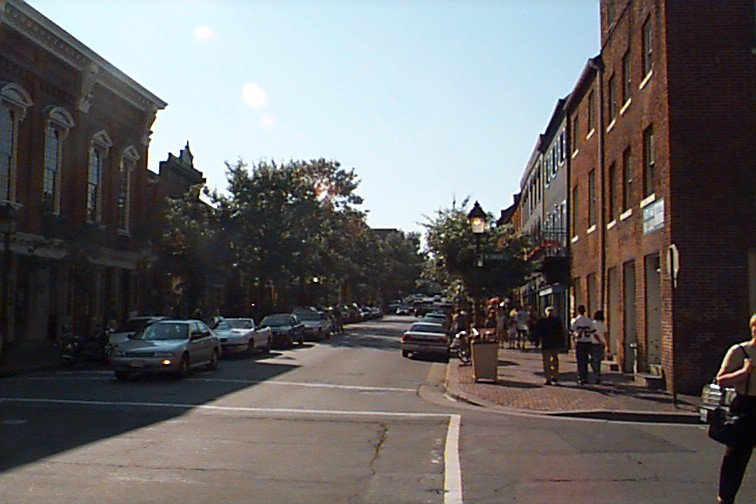

Virginia Tech
ECE 4564
Network Application Design
Project 2 Test File
[Introduction]
[Files]
[Functionality]
[Performance]
[Images]
This page and the set of associated files are designed to test your Project 2 HTTP server. Use your browser's
options to try and force both HTTP/1.1 and HTTP/1.0 behavior.
You should have the following files using the indicated directory structure.
base_directory is the directory on the server host used as the base
directory by your server. For example, the URI /index.html should
retrieve this file.
base_directory
images
thm01.gif
thm02.gif
thm03.gif
thm04.gif
thm05.gif
thm06.gif
neb01.jpg
neb02.jpg
neb03.jpg
neb04.jpg
neb05.jpg
neb06.jpg
page.html
vt.gif
index.html
kingstrt.jpg
marina.jpg
post_test.html
potomac.jpg
pdf_sample.pdf
text_sample.txt
Do the following to test the functionality of your server.
- You should be able to load this page using either of the following URLs:
- http://hostname/index.html
- http://hostname/
Fill in hostname as appropriate. If you are running your server and the
browser on the same host, then you can use localhost as the hostname.
After loading this page, your browser will retrieve the embedded images from
the server. There are a number of embedded images and your browser should
open multiple connections to simultaneously retrieve image files.
- The following three links should all load this page:
index.html,
/index.html, and
/.
- The following link should load another HTML page:
page.html.
- The following link should load a JPEG file (which happens to be NEB 261 in its
infancy): neb005.jpg.
- The following link should load a GIF file:
thm001.gif.
- The following link should load a PDF file:
pdf_sample.pdf.
- The following link should load a text file:
text_sample.txt.
- If you implemented a directory listing option, the following
link should return a listing of the images directory:
images directory listing. If you provide a
hyperlinked directory, clicking on each file name should load the image.
- This is a bad link.
- If you implemented optional support for the POST method, use the following
file for testing: post_test.html.
- At this point, the only suggestion for testing the optional support for the
HEAD method is to use the Castalia Socket Tester or iego's Connecting Sockets to generate a HEAD request.
16 good images and one image that cannot be loaded should appear below.
New Engineering Building Construction Scenes



 



Alexandria Scenes


Bad Image

Last updated: September 26, 2002
© 1998-2002 Scott F. Midkiff
{kind=link}
{kind=link}